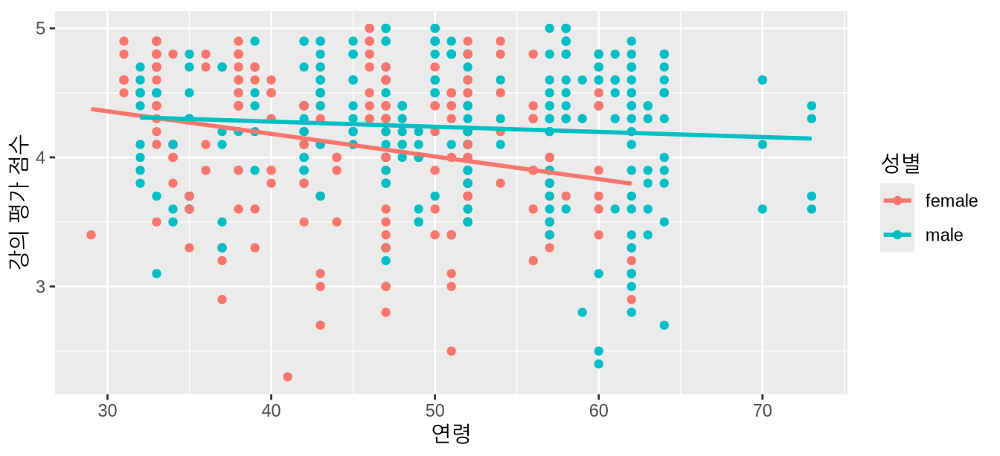
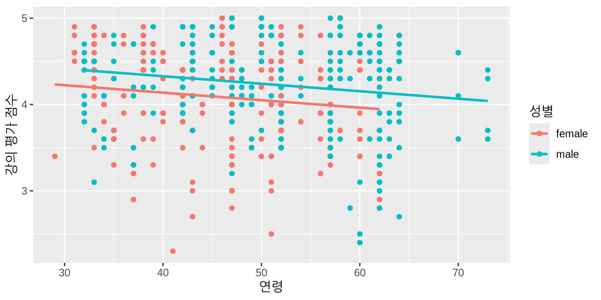
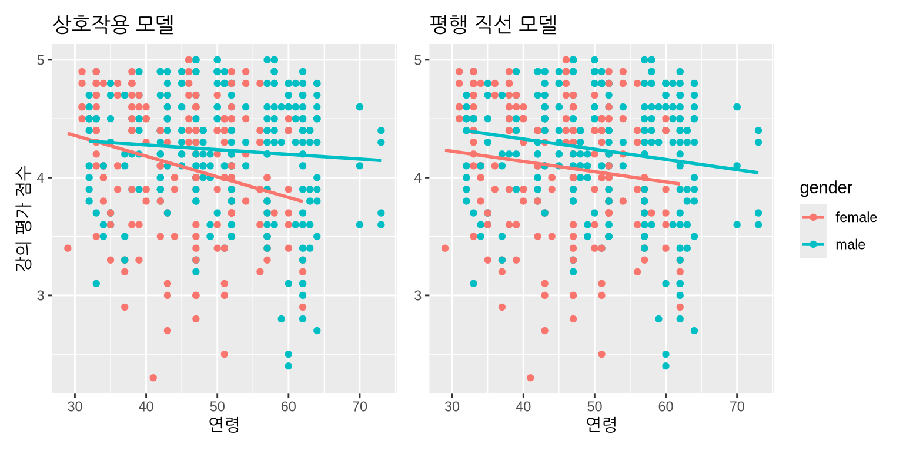
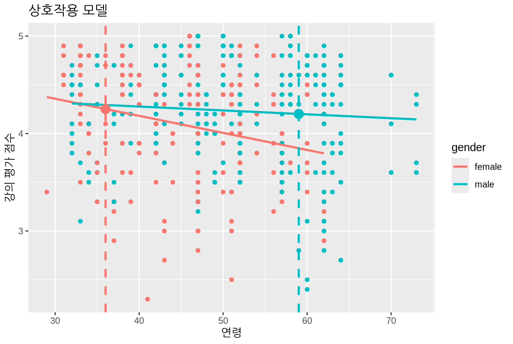
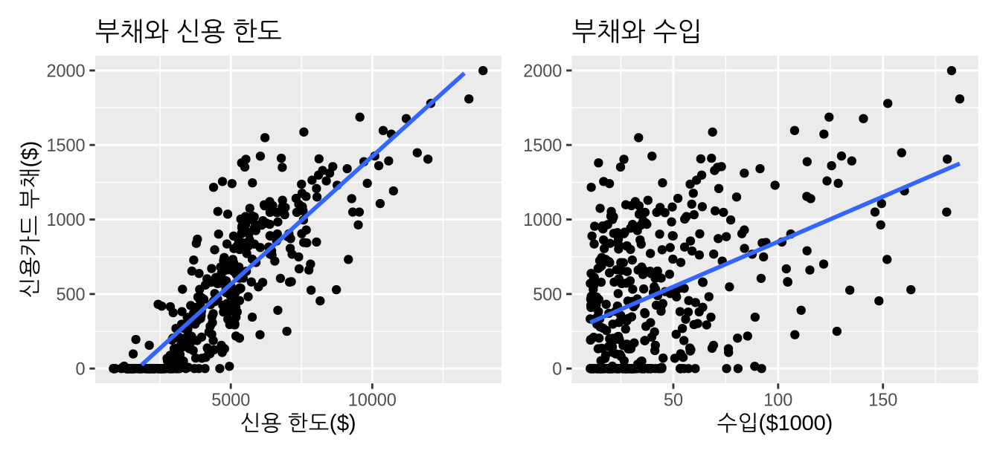
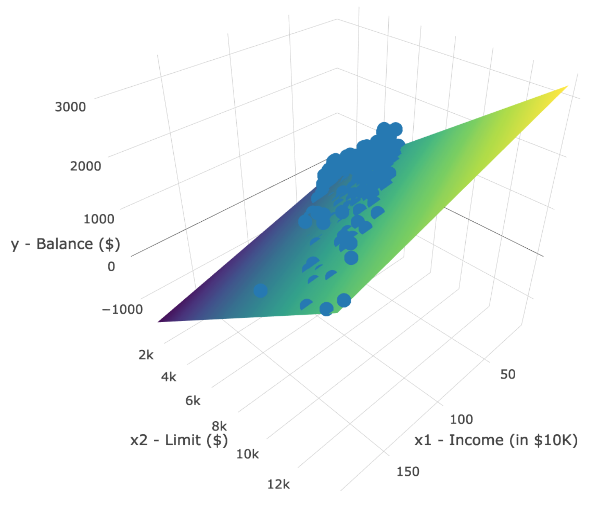
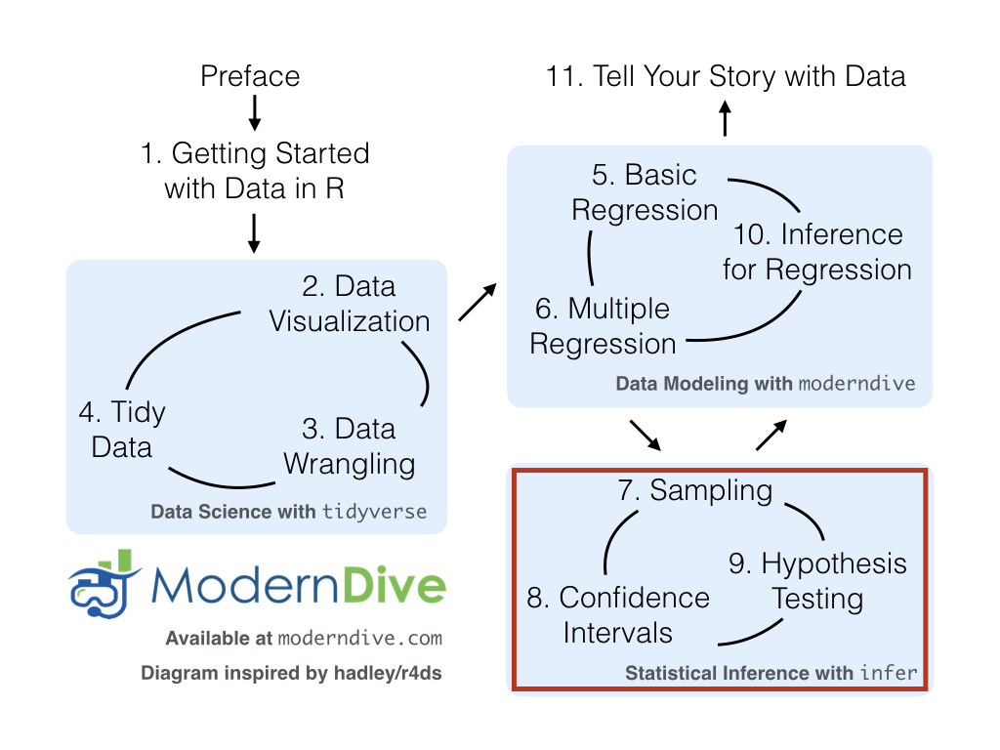

library(tidyverse)
library(moderndive)
library(skimr)
library(ISLR)다중 회귀 분석
기초 회귀 분석 장에서는 설명을 위한 모델링과 관련된 개념들, 특히 모델링의 목표가 결과 변수 \(y\)와 설명 변수 \(x\) 사이의 관계를 명확히 하는 것임을 소개했습니다. 모델링에는 많은 접근 방식이 있지만, 우리는 가장 흔히 사용되고 이해하기 쉬운 기법 중 하나인 선형 회귀(linear regression)에 집중했습니다. 또한 내용을 단순하게 유지하기 위해, 하나의 수치형 설명 변수 절에서 다룬 수치형 \(x\) 변수나 하나의 범주형 설명 변수 절에서 다룬 범주형 \(x\) 변수와 같이 단 하나의 설명 변수만을 갖는 모델을 고려했습니다.
다중 회귀 분석을 다루는 이번 장에서는 두 개 이상의 설명 변수 \(x\)를 포함하는 모델을 살펴보기 시작할 것입니다. 하나의 수치형 설명 변수 절의 강의 평가 점수나 하나의 범주형 설명 변수 절의 기대 수명과 같은 특정 결과 변수를 모델링할 때, 단 하나 이상의 설명 변수 정보를 포함하는 것이 유용할 것임을 짐작할 수 있습니다.
이제 회귀 모델이 두 개 이상의 설명 변수를 고려하게 되므로, 임의의 한 설명 변수가 결과 변수에 미치는 연관된 효과에 대한 해석은 모델에 포함된 다른 설명 변수들과 연계하여 이루어져야 합니다. 그럼 시작해 봅시다!
필요한 패키지
이번 장에 필요한 모든 패키지를 로드해 보겠습니다(이미 설치했다고 가정합니다). tidyverse 패키지 절에서 논의했듯이, library(tidyverse)를 실행하여 tidyverse 패키지를 로드하면 다음과 같이 자주 사용되는 데이터 과학 패키지들을 한꺼번에 로드합니다.
- 데이터 시각화를 위한
ggplot2 - 데이터 전처리를 위한
dplyr - 데이터 형식을 “깔끔하게” 변환하기 위한
tidyr - 스프레드시트 데이터를 R로 불러오기 위한
readr - 그 외 심화 패키지인
purrr,tibble,stringr,forcats
필요하다면 R 패키지란 무엇인가? 절을 참고하여 R 패키지를 설치하고 로드하는 방법을 다시 확인하세요.
수치형 설명 변수 하나와 범주형 설명 변수 하나
하나의 수치형 설명 변수 절에서 소개한 텍사스 대학교 오스틴 캠퍼스(UT Austin)의 강의 평가 데이터를 다시 살펴보겠습니다. 우리는 학생들의 강의 평가 점수와 “미모(beauty)” 점수 사이의 관계를 연구했습니다. 강의 평가 점수인 score는 수치형 결과 변수 \(y\)였고, 미모 점수인 bty_avg는 수치형 설명 변수 \(x\)였습니다.
이 섹션에서는 다른 모델을 고려해 보겠습니다. 결과 변수는 여전히 강의 평가 점수이지만, 수치형 결과 변수 \(y\)는 강사의 강의 평가 점수입니다. 두 개의 설명 변수인 수치형 설명 변수 \(x_1\) (강사의 연령)과 범주형 설명 변수 \(x_2\) (강사의 이분법적 성별)이라는 두 가지 다른 설명 변수를 포함할 것입니다. 나이가 많은 강사가 학생들로부터 더 좋은 강의 평가를 받을까요? 아니면 젊은 강사가 더 좋은 평가를 받을까요? 성별에 따라 학생들이 부여하는 강의 평가 점수에 차이가 있을까요? 우리는 다음과 같은 변수들을 사용하여 다중 회귀 분석(multiple regression) 으로 이들 변수 사이의 관계를 모델링함으로써 질문에 답할 것입니다.
- 수치형 결과 변수 \(y\): 강사의 강의 평가 점수.
- 두 개의 설명 변수:
- 수치형 설명 변수 \(x_1\): 강사의 연령.
- 범주형 설명 변수 \(x_2\): 강사의 (이분법적) 성별.
이 연구가 수행된 당시에는 성별에 대한 통념으로 인해 이 변수가 이분법적 변수로 기록되었다는 점에 유의해야 합니다. 성별을 이처럼 단순화한 모델의 결과가 완벽하지 않을 수 있지만, 우리는 그 결과가 오늘날에도 여전히 유의미하고 관련이 있다고 생각합니다.
탐색적 데이터 분석
UT 오스틴의 463개 강의에 대한 데이터는 moderndive 패키지에 포함된 evals 데이터 프레임에서 찾을 수 있습니다. 하지만 내용을 단순하게 유지하기 위해, 이번 장에서 고려할 변수들만 select()하여 evals_ch6라는 새로운 데이터 프레임에 저장해 보겠습니다. 이 변수들은 기초 회귀 분석 장에서 선택했던 변수들과는 다릅니다.
evals_ch6 <- evals %>%
select(ID, score, age, gender)탐색적 데이터 분석 절에서 보았던 탐색적 데이터 분석의 세 가지 공통 단계를 떠올려 보세요.
- 원 데이터 값 살펴보기.
- 요약 통계량 계산하기.
- 데이터 시각화하기.
먼저 RStudio의 스프레드시트 뷰어로 evals_ch6를 확인하거나 dplyr 패키지의 glimpse() 함수를 사용하여 원 데이터 값을 살펴보겠습니다.
glimpse(evals_ch6)Rows: 463
Columns: 4
$ ID <int> 1, 2, 3, 4, 5, 6, 7, 8, 9, 10, 11, 12, 13, 14, 15, 16, 17, 18, …
$ score <dbl> 4.7, 4.1, 3.9, 4.8, 4.6, 4.3, 2.8, 4.1, 3.4, 4.5, 3.8, 4.5, 4.6…
$ age <int> 36, 36, 36, 36, 59, 59, 59, 51, 51, 40, 40, 40, 40, 40, 40, 40,…
$ gender <fct> female, female, female, female, male, male, male, male, male, f…또한 표 ?tbl-model4-data-preview 에서 서로 다른 강의에 해당하는 463개 행 중 무작위로 추출한 5개 행을 표시해 보겠습니다. 샘플링의 무작위성 때문에 여러분은 아마도 다른 5개 행을 보게 될 것입니다.
evals_ch6 %>% sample_n(size = 5)| ID | score | age | gender |
|---|---|---|---|
| 129 | 3.7 | 62 | male |
| 109 | 4.7 | 46 | female |
| 28 | 4.8 | 62 | male |
| 434 | 2.8 | 62 | male |
| 330 | 4.0 | 64 | male |
evals_ch6 데이터 프레임의 원 데이터 값을 살펴보고 데이터에 대한 감을 잡았으니, 이제 요약 통계량을 계산해 보겠습니다. 이전 장의 탐색적 데이터 분석 절와 탐색적 데이터 분석 에서 수행했던 탐색적 데이터 분석과 마찬가지로, 모델에서 관심 있는 변수들만 select()하여 skimr 패키지의 skim() 함수를 사용해 봅시다.
evals_ch6 %>% select(score, age, gender) %>% skim()Skim summary statistics
n obs: 463
n variables: 3
── Variable type:factor
variable missing complete n n_unique top_counts ordered
gender 0 463 463 2 mal: 268, fem: 195, NA: 0 FALSE
── Variable type:integer
variable missing complete n mean sd p0 p25 p50 p75 p100
age 0 463 463 48.37 9.8 29 42 48 57 73
── Variable type:numeric
variable missing complete n mean sd p0 p25 p50 p75 p100
score 0 463 463 4.17 0.54 2.3 3.8 4.3 4.6 5결측 데이터가 없으며, 남성 강사가 가르치는 강의는 268개, 여성 강사가 가르치는 강의는 195개임을 알 수 있습니다. 또한 강사의 평균 연령은 48.37세입니다. 각 행은 특정 강의를 나타내며 동일한 강사가 흔히 하나 이상의 강의를 가르친다는 점을 떠올려 보세요. 따라서 고유한 강사들의 평균 연령은 다를 수 있습니다.
나아가 두 수치형 변수인 score와 age 사이의 상관 계수를 계산해 보겠습니다. 탐색적 데이터 분석 절에서 상관 계수는 수치형 변수 사이에서만 존재한다고 했던 것을 떠올려 보세요. 이들은 “약하게 음의(weakly negatively)” 상관 관계를 보입니다.
evals_ch6 %>%
get_correlation(formula = score ~ age)# A tibble: 1 × 1
cor
<dbl>
1 -0.107이제 탐색적 데이터 분석의 세 가지 공통 단계 중 마지막 단계인 데이터 시각화를 수행해 보겠습니다. 결과 변수 score와 설명 변수 age가 모두 수치형이므로 산점도를 사용하여 그 관계를 표시하겠습니다. 그런데 범주형 변수인 gender는 어떻게 포함할 수 있을까요? gender 변수를 color 에스테틱에 매핑(mapping)함으로써 유색 산점도를 생성하면 됩니다. 다음 코드는 그림 ?fig-numxplot1 에서 “미모” 점수에 따른 강의 평가 점수의 산점도를 생성했던 코드와 비슷하지만, aes() 매핑에 color = gender가 추가되었습니다.
ggplot(evals_ch6, aes(x = age, y = score, color = gender)) +
geom_point() +
labs(x = "연령", y = "강의 평가 점수", color = "성별") +
geom_smooth(method = "lm", se = FALSE)
생성된 그림 ?fig-numxcatxplot1 에서 ggplot()이 gender의 두 레벨인 female과 male에 해당하는 점들과 선들에 기본 빨간색/파란색 색상 스키마를 할당했음을 확인하세요. 또한 geom_smooth(method = "lm", se = FALSE) 레이어는 각 그룹에 대해 서로 다른 회귀 직선을 자동으로 적합시킵니다.
몇 가지 흥미로운 추세를 발견할 수 있습니다. 첫째, \(x\) = 60 이상에 빨간색 점이 없는 것으로 보아 60세 이상의 여성 교수는 거의 없습니다. 둘째, 두 회귀 직선 모두 연령에 따라 음의 기울기를 가지지만(즉, 나이가 많은 강사가 낮은 점수를 받는 경향이 있음), 여성 강사의 연령에 따른 기울기가 더 가파른 음수입니다. 다시 말해, 여성 강사가 남성 강사보다 고령인 점에 대해 더 가혹한 불이익을 받고 있습니다.
상호작용 모델
이제 상호작용 모델(interaction model) 로 알려진 다중 회귀 모델의 한 유형을 사용하여 결과 변수 \(y\)와 두 설명 변수 사이의 관계를 정량화해 보겠습니다. 섹션 끝부분에서 “상호작용”이라는 용어가 어디에서 유래했는지 설명하겠습니다.
특히, 회귀 표의 수치들을 사용하여 그림 ?fig-numxcatxplot1 의 두 회귀 직선 방정식을 작성해 보겠습니다. 그전에 범주형 설명 변수 \(x\)가 포함된 회귀 분석에 대해 간단히 복습해 보겠습니다.
선형 회귀 절에서 우리는 국가가 속한 대륙의 함수로서 국가별 기대 수명에 대한 회귀 모델을 적합시켰습니다. 다시 말해, 수치형 결과 변수 \(y\) = lifeExp와 5개의 레벨(Africa, Americas, Asia, Europe, Oceania)을 가진 범주형 설명 변수 \(x\) = continent를 사용했습니다. 표 ?tbl-catxplot4b 에서 보았던 회귀 표를 다시 표시해 보겠습니다.
| term | estimate | std_error | statistic | p_value | lower_ci | upper_ci |
|---|---|---|---|---|---|---|
| intercept | 54.8 | 1.02 | 53.45 | 0 | 52.8 | 56.8 |
| continent: Americas | 18.8 | 1.80 | 10.45 | 0 | 15.2 | 22.4 |
| continent: Asia | 15.9 | 1.65 | 9.68 | 0 | 12.7 | 19.2 |
| continent: Europe | 22.8 | 1.70 | 13.47 | 0 | 19.5 | 26.2 |
| continent: Oceania | 25.9 | 5.33 | 4.86 | 0 | 15.4 | 36.5 |
estimate 열에 대한 해석을 떠올려 보세요. Africa가 “비교를 위한 기준(baseline for comparison)” 그룹이었으므로, intercept 항은 아프리카 모든 국가의 평균 기대 수명인 54.8년에 해당합니다. 나머지 4개의 estimate 값은 기준 그룹에 대한 “오프셋(offsets)”에 해당합니다. 예를 들어, 아메리카에 해당하는 “오프셋”은 기준 그룹인 아프리카와 비교했을 때 +18.8입니다. 다시 말해, 아메리카 국가들의 평균 기대 수명은 아프리카보다 18.8년 더 높습니다. 따라서 아메리카 모든 국가의 평균 기대 수명은 54.8 + 18.8 = 73.6입니다. 아시아, 유럽, 오세아니아에 대해서도 동일한 해석이 적용됩니다.
그림 ?fig-numxcatxplot1 의 age와 gender를 사용한 강의 평가 score 다중 회귀 모델로 돌아가서, 기초 회귀 분석 장의 2단계 접근 방식을 사용하여 회귀 표를 생성해 보겠습니다. 먼저 lm() “선형 모델” 함수를 사용하여 모델을 “적합”시킨 다음 get_regression_table() 함수를 적용합니다. 이번에는 모델 공식이 y ~ x 형식이 아니라 y ~ x1 * x2 형식이 됩니다. 즉, 두 설명 변수 x1과 x2가 * 기호로 구분됩니다.
# 회귀 모델 적합:
score_model_interaction <- lm(score ~ age * gender, data = evals_ch6)
# 회귀 표 추출:
get_regression_table(score_model_interaction)| term | estimate | std_error | statistic | p_value | lower_ci | upper_ci |
|---|---|---|---|---|---|---|
| intercept | 4.883 | 0.205 | 23.80 | 0.000 | 4.480 | 5.286 |
| age | -0.018 | 0.004 | -3.92 | 0.000 | -0.026 | -0.009 |
| gender: male | -0.446 | 0.265 | -1.68 | 0.094 | -0.968 | 0.076 |
| age:gendermale | 0.014 | 0.006 | 2.45 | 0.015 | 0.003 | 0.024 |
표 ?tbl-regtable-interaction 의 회귀 표 출력 결과를 보면 estimate 열에 4개 행의 값이 있습니다. 즉시 명확하게 드러나지는 않지만, 이 4개의 값을 사용하여 그림 ?fig-numxcatxplot1 의 두 직선 방정식을 작성할 수 있습니다. 먼저 female이라는 단어가 알파벳순으로 male보다 먼저 오기 때문에 여성 강사가 “비교를 위한 기준” 그룹이 됩니다. 따라서 intercept는 오직 여성 강사만을 위한 절편입니다.
이는 age에 대해서도 마찬가지입니다. 이는 오직 여성 강사만을 위한 연령에 따른 기울기입니다. 따라서 그림 ?fig-numxcatxplot1 에서 빨간색 회귀 직선은 4.883의 절편과 -0.018의 연령에 따른 기울기를 가집니다. 이 데이터에서 절편은 수학적 해석은 가능하지만 강사의 나이가 0세일 수는 없으므로 실질적인 해석은 불가능하다는 점을 기억하세요.
그림 ?fig-numxcatxplot1 의 파란색 직선인 남성 강사의 절편과 연령에 따른 기울기는 어떨까요? 여기서 다시 한번 “오프셋”이라는 개념이 등장합니다.
gender: male 값인 -0.446은 남성 강사의 절편이 아니라, 여성 강사에 대한 남성 강사 절편의 오프셋(offset) 입니다. 따라서 남성 강사의 절편은 intercept + gender: male = 4.883 + (-0.446 = 4.883 - 0.446 = 4.437입니다.
마찬가지로 age:gendermale = 0.014은 남성 강사의 연령에 따른 기울기가 아니라, 남성 강사 기울기의 오프셋입니다. 그러므로 남성 강사의 연령에 따른 기울기는 age + age:gendermale $= -0.018 + 0.014 = -0.004입니다. 따라서 그림 ?fig-numxcatxplot1 에서 파란색 회귀 직선은 4.437의 절편과 -0.004의 연령에 따른 기울기를 가집니다. 이 값들을 표 ?tbl-interaction-summary 에 정리하고 두 연령별 기울기에 집중해 보겠습니다.
| 성별 | 절편 | 연령별 기울기 |
|---|---|---|
| 여성 강사 | 4.883 | -0.018 |
| 남성 강사 | 4.437 | -0.004 |
여성 강사의 연령별 기울기가 -0.018이었으므로, 이는 평균적으로 한 살 더 많은 여성 강사의 강의 평가 점수가 0.018단위만큼 더 낮음을 의미합니다. 그러나 남성 강사의 경우 그에 상응하는 연관된 감소 폭은 평균적으로 0.004단위뿐입니다. 두 연령별 기울기 모두 음수이지만, 여성 강사의 기울기가 더 큰 음수입니다. 이는 그림 ?fig-numxcatxplot1 에서의 관찰 결과와 일치하며, 이 모델은 연령이 남성 강사보다 여성 강사의 강의 평가 점수에 더 큰 영향을 미친다는 점을 시사합니다.
이제 회귀 직선의 방정식을 작성해 보겠습니다. 이 방정식은 적합값 \(\widehat{y} = \widehat{\text{score}}\)를 계산하는 데 사용할 수 있습니다.
\[ \begin{aligned} \widehat{y} = \widehat{\text{score}} &= b_0 + b_{\text{age}} \cdot \text{age} + b_{\text{male}} \cdot \mathbb{1}_{\text{is male}}(x) + b_{\text{age,male}} \cdot \text{age} \cdot \mathbb{1}_{\text{is male}}(x)\\ &= 4.883 -0.018 \cdot \text{age} - 0.446 \cdot \mathbb{1}_{\text{is male}}(x) + 0.014 \cdot \text{age} \cdot \mathbb{1}_{\text{is male}}(x) \end{aligned} \]
와! 선형 회귀 절에서 보았던 대륙의 함수로서 기대 수명 방정식보다 더 위협적으로 보이네요! 하지만 “지시 함수(indicator function)”가 무엇을 하는지 기억한다면 방정식은 크게 단순화됩니다. 위 방정식에는 우리가 관심을 갖는 지시 함수가 하나 있습니다.
\[ \mathbb{1}_{\text{is male}}(x) = \left\{ \begin{array}{ll} 1 & \text{만약 강사 } x \text{가 남성인 경우} \\ 0 & \text{그 외의 경우}\end{array} \right. \]
둘째, 위 방정식의 계수들과 표 ?tbl-regtable-interaction 에 있는 회귀 표의 estimate 열 값을 매칭해 봅시다.
- \(b_0\)는 여성 강사의
intercept= 4.883입니다. - \(b_{\text{age}}\)는 여성 강사의
age에 대한 기울기 = -0.018입니다. - \(b_{\text{male}}\)은 남성 강사의 절편 오프셋 = -0.446입니다.
- \(b_{\text{age,male}}\)은 남성 강사의 연령별 기울기 오프셋 = 0.014입니다.
이 모든 것을 종합하여 여성 강사의 적합값 \(\widehat{y} = \widehat{\text{score}}\)를 계산해 봅시다. 여성 강사의 경우 \(\mathbb{1}_{\text{is male}}(x)\) = 0이므로 이전 방정식은 다음과 같이 됩니다.
\[ \begin{aligned} \widehat{y} = \widehat{\text{score}} &= 4.883 - 0.018 \cdot \text{age} - 0.446 \cdot 0 + 0.014 \cdot \text{age} \cdot 0\\ &= 4.883 - 0.018 \cdot \text{age} - 0 + 0\\ &= 4.883 - 0.018 \cdot \text{age}\\ \end{aligned} \]
이는 그림 ?fig-numxcatxplot1 에서 여성 강사에 해당하는 빨간색 회귀 직선 방정식이며 표 ?tbl-interaction-summary 의 내용과 일치합니다. 마찬가지로 남성 강사의 경우 \(\mathbb{1}_{\text{is male}}(x)\) = 1이므로 이전 방정식은 다음과 같이 됩니다.
\[ \begin{aligned} \widehat{y} = \widehat{\text{score}} &= 4.883 - 0.018 \cdot \text{age} - 0.446 + 0.014 \cdot \text{age}\\ &= (4.883 - 0.446) + (- 0.018 + 0.014) \cdot \text{age}\\ &= 4.437 - 0.004 \cdot \text{age}\\ \end{aligned} \]
이는 그림 ?fig-numxcatxplot1 에서 남성 강사에 해당하는 파란색 회귀 직선 방정식이며 표 ?tbl-interaction-summary 의 내용과 일치합니다.
휴! 산술 계산이 꽤 많았네요! 하지만 걱정하지 마세요. 이 책에서 다루는 모델링 중 가장 어려운 수준입니다. 지시 함수를 사용하거나 회귀 모델에서 범주형 설명 변수를 사용하는 것이 여전히 조금 불확실하다면, 선형 회귀 절을 다시 읽어보시기를 강력히 권장합니다. 그곳은 단 하나의 범주형 설명 변수만 다루므로 훨씬 단순합니다.
이 섹션을 마치기 전에 왜 이런 유형의 모델을 “상호작용 모델”이라고 부르는지 설명하겠습니다. 적합값 \(\widehat{y}\) = \(\widehat{\text{score}}\) 방정식에 있는 \(b_{\text{age,male}}\) 항은 통계 모델링에서 “상호작용 효과(interaction effect)”라고 알려진 것입니다. 상호작용 항은 표 ?tbl-regtable-interaction 의 회귀 표 마지막 행에 있는 age:gendermale = 0.014에 해당합니다.
한 변수의 연관된 효과가 다른 변수의 값에 따라 달라질 때 상호작용 효과가 있다고 말합니다. 즉, 두 변수가 서로 “상호작용”하고 있는 것입니다. 여기에서 나이 변수의 연관된 효과는 다른 변수인 성별의 값에 따라 달라집니다. 여성 강사 대비 남성 강사의 연령별 기울기 차이가 +0.014이라는 사실이 이를 보여줍니다.
강의 평가 점수에 대한 상호작용 효과를 생각하는 또 다른 방법은 다음과 같습니다. UT 오스틴의 특정 강사에 대해 연령 그 자체에 따른 연관된 효과가 있을 수 있고 성별 그 자체에 따른 연관된 효과가 있을 수 있지만, 연령과 성별이 함께 고려될 때 두 개별 효과 이상의 추가적인 효과가 있을 수 있습니다.
평행 직선 모델
수치형 설명 변수 하나와 범주형 설명 변수 하나를 사용하는 회귀 모델을 만들 때, 방금 살펴본 상호작용 모델만 가능한 것은 아닙니다. 우리가 사용할 수 있는 또 다른 유형의 모델은 평행 직선(parallel slopes) 모델이라고 알려져 있습니다. 회귀 직선들이 서로 다른 절편과 서로 다른 기울기를 가질 수 있는 상호작용 모델과 달리, 평행 직선 모델은 서로 다른 절편은 허용하지만 모든 직선이 동일한 기울기를 갖도록 강제합니다. 따라서 결과적으로 나타나는 회귀 직선들은 평행합니다. evals_ch6에 대해 가장 잘 맞는 평행 직선 모델을 시각화해 보겠습니다.
안타깝게도 ggplot2 패키지의 geom_smooth() 함수에는 평행 직선 모델을 그리는 편리한 방법이 없습니다. 그래서 Evgeni Chasnovski는 moderndive 패키지에 포함된 geom_parallel_slopes() 라는 특수 목적 함수를 만들었습니다. geom_parallel_slopes()는 ggplot2 패키지가 아니라 moderndive 패키지에서 찾을 수 있습니다. 따라서 이 함수를 사용하려면 ggplot2와 moderndive 패키지를 모두 로드해야 합니다. 이 함수를 사용하여 강의 평가 점수에 대한 평행 직선 모델을 그려보겠습니다. 코드가 그림 ?fig-numxcatxplot1 에서 상호작용 모델의 시각화를 생성한 코드와 거의 동일하지만, geom_smooth(method = "lm", se = FALSE) 레이어가 geom_parallel_slopes(se = FALSE)로 바뀌었다는 점에 주목하세요.
ggplot(evals_ch6, aes(x = age, y = score, color = gender)) +
geom_point() +
labs(x = "연령", y = "강의 평가 점수", color = "성별") +
geom_parallel_slopes(se = FALSE)
그림 ?fig-numxcatx-parallel 에서 여성 강사와 남성 강사에 각각 대응하는 평행한 직선들을 볼 수 있습니다. 여기서는 동일한 음의 기울기를 가집니다. 이는 나이가 많은 강사가 젊은 강사보다 낮은 강의 평가 점수를 받는 경향이 있음을 말해줍니다. 또한 직선이 평행하므로 고령에 따른 연관된 불이익은 여성 강사와 남성 강사 모두에게 동일하다고 가정됩니다.
그러나 그림 ?fig-numxcatx-parallel 에서 남성 강사에 해당하는 파란색 직선이 여성 강사에 해당하는 빨간색 직선보다 더 높다는 사실에서 알 수 있듯이, 이 두 직선은 서로 다른 절편을 가집니다. 이는 연령에 관계없이 여성 강사가 남성 강사보다 더 낮은 강의 평가 점수를 받는 경향이 있음을 말해줍니다.
두 개의 절편과 하나의 공통 기울기에 대한 정확한 수치를 얻기 위해, 다시 한번 lm() “선형 모델” 함수를 사용하여 모델을 “적합”시킨 다음 get_regression_table() 함수를 적용해 보겠습니다. 하지만 모델 공식이 y ~ x1 * x2 형식이었던 상호작용 모델과 달리, 이제 모델 공식은 y ~ x1 + x2 형식이 됩니다. 즉, 두 설명 변수 x1과 x2가 + 기호로 구분됩니다.
# 회귀 모델 적합:
score_model_parallel_slopes <- lm(score ~ age + gender, data = evals_ch6)
# 회귀 표 추출:
get_regression_table(score_model_parallel_slopes)| term | estimate | std_error | statistic | p_value | lower_ci | upper_ci |
|---|---|---|---|---|---|---|
| intercept | 4.484 | 0.125 | 35.79 | 0.000 | 4.238 | 4.730 |
| age | -0.009 | 0.003 | -3.28 | 0.001 | -0.014 | -0.003 |
| gender: male | 0.191 | 0.052 | 3.63 | 0.000 | 0.087 | 0.294 |
표 ?tbl-regtable-interaction 의 상호작용 모델 회귀 표와 마찬가지로, “비교를 위한 기준”인 여성 강사 그룹의 절편에 해당하는 intercept 항과 여성 강사 대비 남성 강사의 절편 오프셋에 해당하는 gender: male 항이 있습니다. 다시 말해, 그림 ?fig-numxcatx-parallel 에서 여성 강사에 해당하는 빨간색 회귀 직선은 4.484의 절편을 가지는 반면, 남성 강사에 해당하는 파란색 회귀 직선은 4.484 + 0.191 = 4.675의 절편을 가집니다. 다시 한번 말씀드리자면, 나이가 0세인 강사는 없으므로 이 절편들은 수학적 해석만 가능할 뿐 실질적인 해석은 불가능합니다.
그러나 표 ?tbl-regtable-interaction 와 달리 이제 연령에 대한 기울기는 -0.009 하나뿐입니다. 이는 모델이 여성 강사와 남성 강사 모두 동일한 연령별 기울기를 갖도록 규정하고 있기 때문입니다. 이는 다른 강사보다 한 살 더 많은 강사가 평균적으로 0.009단위만큼 더 낮은 강의 평가 점수를 받았음을 말해줍니다. 이러한 고령에 따른 불이익은 여성 강사와 남성 강사 모두에게 동일하게 적용됩니다.
이 값들을 표 ?tbl-parallel-slopes-summary 에 정리해 보겠습니다. 절편은 다르지만 기울기는 공통이라는 점에 주목하세요.
| 성별 | 절편 | 연령별 기울기 |
|---|---|---|
| 여성 강사 | 4.484 | -0.009 |
| 남성 강사 | 4.675 | -0.009 |
이제 적합값 \(\widehat{y} = \widehat{\text{score}}\)를 계산하는 데 사용할 수 있는 회귀 직선 방정식을 작성해 보겠습니다.
\[ \begin{aligned} \widehat{y} = \widehat{\text{score}} &= b_0 + b_{\text{age}} \cdot \text{age} + b_{\text{male}} \cdot \mathbb{1}_{\text{is male}}(x)\\ &= 4.484 -0.009 \cdot \text{age} + 0.191 \cdot \mathbb{1}_{\text{is male}}(x) \end{aligned} \]
이 모든 것을 종합하여 여성 강사의 적합값 \(\widehat{y} = \widehat{\text{score}}\)를 계산해 봅시다. 여성 강사의 경우 지시 함수 \(\mathbb{1}_{\text{is male}}(x)\) = 0이므로 이전 방정식은 다음과 같이 됩니다.
\[ \begin{aligned} \widehat{y} = \widehat{\text{score}} &= 4.484 -0.009 \cdot \text{age} + 0.191 \cdot 0\\ &= 4.484 -0.009 \cdot \text{age} \end{aligned} \]
이는 그림 ?fig-numxcatx-parallel 에서 여성 강사에 해당하는 빨간색 회귀 직선 방정식입니다. 마찬가지로 남성 강사의 경우 지시 함수 \(\mathbb{1}_{\text{is male}}(x)\) = 1이므로 이전 방정식은 다음과 같이 됩니다.
\[ \begin{aligned} \widehat{y} = \widehat{\text{score}} &= 4.484 -0.009 \cdot \text{age} + 0.191 \cdot 1\\ &= (4.484 + 0.191) -0.009 \cdot \text{age}\\ &= 4.675 -0.009 \cdot \text{age} \end{aligned} \]
이는 그림 ?fig-numxcatx-parallel 에서 남성 강사에 해당하는 파란색 회귀 직선 방정식입니다.
좋습니다! 우리는 데이터에 대해 상호작용 모델과 평행 직선 모델을 모두 고려해 보았습니다. 그림 ?fig-numxcatx-comparison 에서 두 모델의 시각화 결과를 나란히 비교해 보겠습니다.

이 시점에서 여러분은 스스로에게 이렇게 물을지도 모릅니다. “평행 직선 모델을 도대체 왜 사용하나요?” 그림 ?fig-numxcatx-comparison 의 왼쪽 그래프를 보면 두 직선은 분명히 평행해 보이지 않는데, 왜 굳이 평행하게 강제하느냐는 것이죠. 이 데이터에 대해서는 저희도 동의합니다! 왼쪽의 상호작용 모델이 더 적절하다고 쉽게 주장할 수 있습니다. 하지만 이어지는 Model selection using visualizations 절 모델 선택 파트에서 평행 직선 모델이 더 강력한 설득력을 갖는 사례를 제시할 것입니다.
관측값/적합값 및 잔차
간결성을 위해, 이 섹션에서는 score_model_interaction에 저장된 상호작용 모델에 대해서만 관측값, 적합값 및 잔차를 계산하겠습니다. 평행 직선 모델에 대한 해당 값들은 이어지는 학습 확인(Learning check)에서 살펴볼 기회가 있을 것입니다.
예를 들어, 여성이고 36세인 강사가 있다고 가정해 봅시다. 우리 모델은 어떤 적합값 \(\widehat{y}\) = \(\widehat{\text{score}}\)를 산출할까요? 또한 남성이고 59세인 다른 강사가 있다고 가정해 봅시다. 그들의 적합값 \(\widehat{y}\)는 얼마일까요?
먼저 여성 강사의 경우, 그림 ?fig-fitted-values 에서 \(x\) = 연령 = 36인 수직선과 빨간색 회귀 직선의 교차점을 찾아 시각적으로 답할 수 있습니다. 이 값을 그림 ?fig-fitted-values 에 커다란 빨간색 점으로 표시했습니다. 마찬가지로 남성 강사의 경우, 그림 ?fig-fitted-values 에서 \(x\) = 연령 = 59인 수직선과 파란색 회귀 직선의 교차점을 찾아 적합값 \(\widehat{y}\) = \(\widehat{\text{score}}\)를 식별할 수 있습니다. 이 값을 그림 ?fig-fitted-values 에 커다란 파란색 점으로 표시했습니다.

이 두 \(\widehat{y}\) = \(\widehat{\text{score}}\) 값은 정확히 얼마일까요? 상호작용 모델 절에서 계산했던 두 회귀 직선의 방정식을 사용할 수 있으며, 이 방정식은 표 ?tbl-regtable-interaction 의 회귀 표 값을 기반으로 합니다.
- 모든 여성 강사: \(\widehat{y} = \widehat{\text{score}} = 4.883 - 0.018 \cdot \text{연령}\)
- 모든 남성 강사: \(\widehat{y} = \widehat{\text{score}} = 4.437 - 0.004 \cdot \text{연령}\)
따라서 우리의 적합값은 각각 \(4.883 - 0.018 \cdot 36 = 4.24\)와 \(4.437 - 0.004 \cdot 59 = 4.2\)가 됩니다.
이제 이 두 명의 강사뿐만 아니라 evals_ch6 데이터 프레임에 포함된 모든 463개 강의의 강사들에 대한 적합값을 원한다면 어떻게 해야 할까요? 이를 수작업으로 하는 것은 지루하고 오래 걸리는 일일 것입니다! 여기서 moderndive 패키지의 get_regression_points() 함수가 도움이 될 수 있습니다. 이 함수는 모든 463개 강의에 대해 위의 계산을 빠르게 자동화해 줍니다. 표 ?tbl-model4-points-table 에 463개 중 처음 10개 행의 미리보기를 제시합니다.
regression_points <- get_regression_points(score_model_interaction)
regression_points| ID | score | age | gender | score_hat | residual |
|---|---|---|---|---|---|
| 1 | 4.7 | 36 | female | 4.25 | 0.448 |
| 2 | 4.1 | 36 | female | 4.25 | -0.152 |
| 3 | 3.9 | 36 | female | 4.25 | -0.352 |
| 4 | 4.8 | 36 | female | 4.25 | 0.548 |
| 5 | 4.6 | 59 | male | 4.20 | 0.399 |
| 6 | 4.3 | 59 | male | 4.20 | 0.099 |
| 7 | 2.8 | 59 | male | 4.20 | -1.401 |
| 8 | 4.1 | 51 | male | 4.23 | -0.133 |
| 9 | 3.4 | 51 | male | 4.23 | -0.833 |
| 10 | 4.5 | 40 | female | 4.18 | 0.318 |
알고 보니 36세인 여성 강사는 처음 4개 강의를 가르쳤고, 남성 강사는 그다음 3개 강의를 가르쳤습니다. 결과적인 \(\widehat{y}\) = \(\widehat{\text{score}}\) 적합값은 score_hat 열에 있습니다. 또한 get_regression_points() 함수는 잔차 \(y-\widehat{y}\)도 반환합니다. 예를 들어, 36세인 여성 강사가 가르친 첫 번째와 네 번째 강의는 양의 잔차를 가지는데, 이는 학생들이 부여한 실제 강의 평가 점수가 적합값인 4.25보다 높았음을 나타냅니다. 반면, 이 강사가 가르친 두 번째와 세 번째 강의는 음의 잔차를 가지는데, 이는 실제 강의 평가 점수가 4.25보다 낮았음을 나타냅니다.
학습 확인
(LC6.1) 방금 했던 상호작용 모델이 아니라, score_model_parallel_slopes에 저장했던 평행 직선 모델에 대해 관측값, 적합값 및 잔차를 계산해 보세요.
두 수치형 설명 변수
이제 주제를 바꿔서 수치형 설명 변수 하나와 범주형 설명 변수 하나 대신, 두 개의 수치형 설명 변수를 사용하는 다중 회귀 모델을 고려해 보겠습니다. 우리가 사용할 데이터 세트는 통계 및 머신러닝에 관한 중급 수준의 교과서인 [An Introduction to Statistical Learning with Applications in R (ISLR)](https://www.statlearning.com/ (James et al. 2017)에서 가져왔습니다. 동반된 ISLR R 패키지에는 저자들이 다양한 머신러닝 방법을 적용한 데이터 세트들이 포함되어 있습니다.
이 책에서 자주 사용되는 데이터 세트 중 하나은 Credit 데이터 세트로, 관심 있는 결과 변수는 400명의 개인별 신용카드 부채(debt)입니다. 수입, 신용 한도, 신용 등급, 연령과 같은 다른 변수들도 포함되어 있습니다. Credit 데이터는 실제 개인의 금융 정보를 바탕으로 한 것이 아니라 교육 목적으로 사용되는 시뮬레이션 데이터 세트라는 점에 유의하세요.
이 섹션에서는 다음과 같은 변수들을 사용하여 회귀 모델을 적합시킬 것입니다.
- 수치형 결과 변수 \(y\): 카드 소지자의 신용카드 부채.
- 두 개의 설명 변수:
- 수치형 설명 변수 \(x_1\): 카드 소지자의 신용 한도(credit limit).
- 또 다른 수치형 설명 변수 \(x_2\): 카드 소지자의 수입(income, 단위: 1,000달러).
탐색적 데이터 분석
Credit 데이터 세트를 로드해 보겠습니다. 내용을 단순하게 유지하기 위해 이번 장에서 고려할 변수들만 select()하여 credit_ch6라는 새로운 데이터 프레임에 저장하겠습니다. select 변수 선택 절에서 소개했던 것과는 약간 다른 방식으로 select() 동사를 사용하는 점에 주목하세요. 예를 들어, Credit의 Balance 변수를 선택한 다음 이를 debt라는 새로운 변수 이름으로 저장할 것입니다. 이는 여기에서 “debt(부채)”라는 용어가 “balance(잔액)”보다 해석하기 더 쉽기 때문입니다.
library(ISLR)
credit_ch6 <- Credit %>% as_tibble() %>%
select(ID, debt = Balance, credit_limit = Limit,
income = Income, credit_rating = Rating, age = Age)탐색적 데이터 분석의 첫 번째 공통 단계인 원 데이터 값 살펴보기에서 select() 사용 효과를 확인할 수 있습니다. RStudio의 스프레드시트 뷰어로 확인하거나 glimpse()를 사용해 보세요.
glimpse(credit_ch6)Rows: 400
Columns: 6
$ ID <int> 1, 2, 3, 4, 5, 6, 7, 8, 9, 10, 11, 12, 13, 14, 15, 16, 1…
$ debt <int> 333, 903, 580, 964, 331, 1151, 203, 872, 279, 1350, 1407…
$ credit_limit <int> 3606, 6645, 7075, 9504, 4897, 8047, 3388, 7114, 3300, 68…
$ income <dbl> 14.9, 106.0, 104.6, 148.9, 55.9, 80.2, 21.0, 71.4, 15.1,…
$ credit_rating <int> 283, 483, 514, 681, 357, 569, 259, 512, 266, 491, 589, 1…
$ age <int> 34, 82, 71, 36, 68, 77, 37, 87, 66, 41, 30, 64, 57, 49, …또한 표 ?tbl-model3-data-preview 에서 400명의 신용카드 소지자 중 무작위로 추출한 5명의 샘플을 살펴보겠습니다. 다시 한번 말씀드리지만, 샘플링의 무작위성 때문에 여러분은 아마도 다른 5개 행을 보게 될 것입니다.
credit_ch6 %>% sample_n(size = 5)| ID | debt | credit_limit | income | credit_rating | age |
|---|---|---|---|---|---|
| 272 | 436 | 4866 | 45.0 | 347 | 30 |
| 239 | 52 | 2910 | 26.5 | 236 | 58 |
| 87 | 815 | 6340 | 55.4 | 448 | 33 |
| 108 | 0 | 3189 | 39.1 | 263 | 72 |
| 149 | 0 | 2420 | 15.2 | 192 | 69 |
credit_ch6 데이터 프레임의 원 데이터 값을 살펴보고 데이터에 대한 감을 잡았으니, 이제 탐색적 데이터 분석의 다음 공통 단계인 요약 통계량 계산으로 넘어가겠습니다. skimr 패키지의 skim() 함수를 사용하되, 모델에 관심 있는 열들만 select()하도록 주의하세요.
credit_ch6 %>% select(debt, credit_limit, income) %>% skim()Skim summary statistics
n obs: 400
n variables: 3
── Variable type:integer
variable missing complete n mean sd p0 p25 p50 p75 p100
credit_limit 0 400 400 4735.6 2308.2 855 3088 4622.5 5872.75 13913
debt 0 400 400 520.01 459.76 0 68.75 459.5 863 1999
── Variable type:numeric
variable missing complete n mean sd p0 p25 p50 p75 p100
income 0 400 400 45.22 35.24 10.35 21.01 33.12 57.47 186.63결과 변수 debt의 요약 통계량을 확인해 보세요. 신용카드 부채의 평균과 중앙값은 각각 $520.01와 $459.50이며, 카드 소지자의 25%는 부채가 $68.75 이하입니다. 이제 설명 변수 중 하나인 credit_limit를 살펴보면, 신용 한도의 평균과 중앙값은 각각 $4735.6와 $4622.50이며, 카드 소지자의 75%는 수입이 $57,470 이하입니다.
결과 변수 debt와 설명 변수 credit_limit, income이 모두 수치형이므로, 이들 변수 사이의 서로 다른 가능한 모든 쌍에 대해 상관 계수를 계산할 수 있습니다. 먼저 탐색적 데이터 분석 절에서 보았던 get_correlation() 명령을 각 설명 변수에 대해 한 번씩, 총 두 번 실행할 수 있습니다.
credit_ch6 %>% get_correlation(debt ~ credit_limit)
credit_ch6 %>% get_correlation(debt ~ income)또는 표 ?tbl-model3-correlation 에 표시된 것처럼 상관 행렬(correlation matrix) 을 반환하여 동시에 계산할 수 있습니다. 적절한 행/열 조합에서 관심 있는 변수 쌍의 상관 계수를 확인할 수 있습니다.
credit_ch6 %>%
select(debt, credit_limit, income) %>%
cor()| debt | credit_limit | income | |
|---|---|---|---|
| debt | 1.000 | 0.862 | 0.464 |
| credit_limit | 0.862 | 1.000 | 0.792 |
| income | 0.464 | 0.792 | 1.000 |
예를 들어, 다음과 같은 상관 계수들을 확인할 수 있습니다.
debt와 자기 자신의 상관 관계는 상관 계수의 정의에 따라 예상대로 1입니다.debt와credit_limit사이의 상관 계수는 0.862입니다. 이는 강한 양의 선형 관계를 나타내며, 신용 한도가 높은 사람만이 많은 신용카드 부채를 질 수 있다는 점에서 타당합니다.debt와income사이의 상관 계수는 0.464입니다. 이는 또 다른 양의 선형 관계를 시사하지만,debt와credit_limit사이의 관계만큼 강하지는 않습니다.- 추가적으로, 두 설명 변수인
credit_limit와income사이의 상관 계수가 0.792임을 읽어낼 수 있습니다.
우리는 credit_limit와 income 설명 변수 사이에 높은 수준의 공선성(collinearity) 이 있다고 말합니다. 공선성(또는 다중공선성)은 다중 회귀 모델에서 하나의 설명 변수가 다른 설명 변수와 높은 상관 관계를 갖는 현상을 말합니다.
따라서 우리의 경우 credit_limit와 income이 높은 상관 관계를 가지므로, 누군가의 credit_limit를 안다면 그 사람의 income에 대해서도 꽤 잘 추측할 수 있습니다. 즉, 이 두 변수는 어느 정도 중복된 정보를 제공합니다. 하지만 공선성이 있는 설명 변수를 다루는 방법에 대한 논의는 회귀 모델링에 관한 좀 더 중급 수준의 도서에 맡기겠습니다.
그림 ?fig-2numxplot1 의 두 개의 별도 그래프를 통해 결과 변수와 각 두 설명 변수 사이의 관계를 시각화해 보겠습니다.
ggplot(credit_ch6, aes(x = credit_limit, y = debt)) +
geom_point() +
labs(x = "신용 한도($)", y = "신용카드 부채($)",
title = "부채와 신용 한도") +
geom_smooth(method = "lm", se = FALSE)
ggplot(credit_ch6, aes(x = income, y = debt)) +
geom_point() +
labs(x = "수입($1000)", y = "신용카드 부채($)",
title = "부채와 수입") +
geom_smooth(method = "lm", se = FALSE)
신용 한도와 신용카드 부채 사이에 양의 관계가 있음을 확인하세요. 신용 한도가 증가함에 따라 신용카드 부채도 함께 증가합니다. 이는 앞서 계산한 0.862라는 강한 양의 상관 계수와 일치합니다. 수입의 경우, 약한 양의 상관 계수인 0.464를 감안하면 양의 관계가 그리 강해 보이지 않습니다.
그러나 그림 ?fig-2numxplot1 의 두 그래프는 결과 변수와 각 두 설명 변수 사이의 관계를 개별적으로 보여줄 뿐입니다. 세 변수 모두의 결합된(joint) 관계를 동시에 시각화하려면 그림 ?fig-3D-scatterplot 과 같은 3차원(3D 산점도가 필요합니다. credit_ch6 데이터 프레임의 400개 관측치 각각은 다음과 같은 파란색 점으로 표시됩니다.
- 수치형 결과 변수 \(y\)인
debt가 수직 축에 있습니다. - 두 수치형 설명 변수 \(x_1\)인
income과 \(x_2\)인credit_limit가 바닥 평면을 형성하는 두 축에 있습니다.

또한 회귀 평면(regression plane) 도 포함되어 있습니다. 가장 잘 맞는 직선 절에서 회귀 직선은 점들의 구름을 통과하는 수많은 가능한 직선 중 잔차 제곱합(sum of squared residuals) 을 최소화한다는 의미에서 “가장 잘 맞는(best-fitting)” 선임을 떠올려 보세요. 이 개념은 두 개의 수치형 설명 변수를 사용하는 모델로도 확장됩니다. 차이점은 이제 “가장 잘 맞는” 직선 대신, 잔차 제곱합을 마찬가지로 최소화하는 “가장 잘 맞는” 평면을 갖게 된다는 것입니다. 브라우저에서 이 그래프의 인터랙티브 버전을 열어보려면 이 웹사이트를 방문하세요.
학습 확인
(LC6.2) 동일한 결과 변수 \(y\)인 debt를 사용하되, credit_rating과 age를 새로운 설명 변수 \(x_1\)과 \(x_2\)로 설정하여 새로운 탐색적 데이터 분석을 수행해 보세요. 카드 소지자의 부채와 그들의 신용 등급 및 연령 사이의 관계에 대해 무엇을 말할 수 있나요?
회귀 평면
이제 회귀 모델을 적합시키고 그림 ?fig-3D-scatterplot 의 회귀 평면에 해당하는 회귀 표를 얻어보겠습니다. 이 소섹션은 간결하게 하기 위해 상호작용 모델 절에서 score ~ age * gender라는 모델 공식을 사용하여 수행했던 것처럼 income과 credit_limit 두 수치형 설명 변수에 대한 상호작용 모델은 고려하지 않겠습니다. 대신 y ~ x1 + x2 형태의 공식으로 모델 적합만 고려할 것입니다. 하지만 다소 혼란스럽게도 이제 여러 직선 대신 하나의 회귀 평면을 갖게 되므로, 두 개의 수치형 설명 변수가 있을 때는 “평행 직선(parallel slopes)”이라는 라벨이 적용되지 않습니다. 8장과 이번 장에서 여러 번 수행했던 것처럼, 2단계 프로세스를 사용한 이 모델의 회귀 표는 표 ?tbl-model3-table-output 에 제시되어 있습니다.
# 회귀 모델 적합:
debt_model <- lm(debt ~ credit_limit + income, data = credit_ch6)
# 회귀 표 출력:
get_regression_table(debt_model)| term | estimate | std_error | statistic | p_value | lower_ci | upper_ci |
|---|---|---|---|---|---|---|
| intercept | -385.179 | 19.465 | -19.8 | 0 | -423.446 | -346.912 |
| credit_limit | 0.264 | 0.006 | 45.0 | 0 | 0.253 | 0.276 |
| income | -7.663 | 0.385 | -19.9 | 0 | -8.420 | -6.906 |
- 먼저
lm(y ~ x1 + x2, data)함수를 사용하여 선형 회귀 모델을 “적합”시키고 이를debt_model에 저장합니다. moderndive패키지의get_regression_table()함수를debt_model에 적용하여 회귀 표를 얻습니다.
estimate 열의 세 값을 해석해 보겠습니다. 첫째, intercept 값은 -$385.179입니다. 이 절편은 credit_limit가 $0이고 income이 $0인 개인의 신용카드 부채를 나타냅니다. 그러나 우리 데이터에서는 credit_limit나 income 값이 $0인 개인이 없으므로 절편은 실제적인 해석 의미가 없습니다. 대신 절편은 3D 공간에서 회귀 평면의 위치를 정하는 데 사용됩니다.
둘째, credit_limit 값은 $0.264입니다. 모델의 다른 모든 설명 변수를 고려할 때, credit_limit가 1달러 증가할 때마다 신용카드 부채는 평균적으로 $0.26만큼 증가하는 경향이 있습니다. 단순 선형 회귀 절에서 했던 것처럼, 상관관계가 반드시 인과관계를 의미하지는 않는다 절에서 “상관관계가 반드시 인과관계는 아니다”라는 것을 보았듯이 인과관계를 함축하지 않도록 주의합니다. 우리는 단지 연관된(associated) 증가가 있었다고 말할 뿐입니다.
또한 해석 앞에 “모델의 다른 모든 설명 변수를 고려할 때”라는 문구를 덧붙입니다. 여기서 다른 모든 설명 변수란 income을 의미합니다. 이는 우리가 이제 동일한 모델에서 여러 설명 변수의 연관된 효과를 동시에 공동으로 해석하고 있음을 강조하기 위한 것입니다.
셋째, income = -$7.66입니다. 모델의 다른 모든 설명 변수를 고려할 때, income이 1단위($1,000) 증가할 때마다 신용카드 부채는 평균적으로 $7.66만큼 감소하는 경향이 있습니다.
이 결과들을 종합하면, 적합값 \(\widehat{y}\) = \(\widehat{\text{debt}}\)를 제공하는 회귀 평면의 방정식은 다음과 같습니다.
\[ \begin{aligned} \widehat{y} &= b_0 + b_1 \cdot x_1 + b_2 \cdot x_2\\ \widehat{\text{debt}} &= b_0 + b_{\text{limit}} \cdot \text{limit} + b_{\text{income}} \cdot \text{income}\\ &= -385.179 + 0.263 \cdot\text{limit} - 7.663 \cdot\text{income} \end{aligned} \]
그러나 그림 ?fig-2numxplot1 의 오른쪽 그래프에서 debt와 income의 관계를 격리하여 그렸을 때는 양의 관계가 있는 것처럼 보였습니다. 하지만 마지막에 논의한 다중 회귀에서 debt, credit_limit, income 사이의 관계를 공동으로 모델링했을 때는 income의 음의 기울기인 -$7.663에서 알 수 있듯이 debt와 income 사이에 음의 관계가 있는 것으로 나타납니다. 이러한 모순된 결과를 무엇이 설명할까요? 집계된 데이터에서 존재하는 전체적인 추세가 데이터를 그룹으로 나누었을 때 사라지거나 뒤바뀌는 현상인 심슨의 역설(Simpson’s Paradox) 때문입니다. 심슨의 역설 절에서 credit_limit와 신용카드 debt 사이의 관계를 서로 다른 income 구간별로 나누어 살펴봄으로써 이 아이디어를 자세히 설명하겠습니다.
학습 확인
(LC6.3) credit_rating과 age를 새로운 수치형 설명 변수 \(x_1\)과 \(x_2\)로 사용하여 lm(debt ~ credit_rating + age, data = credit_ch6)로 새로운 선형 회귀를 적합시켜 보세요. get_regression_table() 함수를 적용하여 회귀 표에서 “가장 잘 맞는” 회귀 평면에 대한 정보를 얻으세요. 회귀 결과가 이전 탐색적 데이터 분석의 결과와 어떻게 일치하나요?
관측값/적합값 및 잔차
get_regression_points() 함수를 사용하여 회귀 모델의 모든 적합값과 잔차를 계산하고, 표 ?tbl-model3-points-table 에 처음 10개 행만 제시하겠습니다. 그림 ?fig-3D-scatterplot 의 3D 산점도에 표시된 각 파란색 점의 좌표는 income, credit_limit, debt 열에서 찾을 수 있음을 기억하세요. 회귀 평면 위의 적합값은 debt_hat 열에 있으며, 이전 섹션의 회귀 평면 방정식을 사용하여 계산됩니다.
\[ \begin{aligned} \widehat{y} = \widehat{\text{debt}} &= -385.179 + 0.263 \cdot \text{limit} - 7.663 \cdot \text{income} \end{aligned} \]
get_regression_points(debt_model)| ID | debt | credit_limit | income | debt_hat | residual |
|---|---|---|---|---|---|
| 1 | 333 | 3606 | 14.9 | 454 | -120.8 |
| 2 | 903 | 6645 | 106.0 | 559 | 344.3 |
| 3 | 580 | 7075 | 104.6 | 683 | -103.4 |
| 4 | 964 | 9504 | 148.9 | 986 | -21.7 |
| 5 | 331 | 4897 | 55.9 | 481 | -150.0 |
| 6 | 1151 | 8047 | 80.2 | 1127 | 23.6 |
| 7 | 203 | 3388 | 21.0 | 349 | -146.4 |
| 8 | 872 | 7114 | 71.4 | 948 | -76.0 |
| 9 | 279 | 3300 | 15.1 | 371 | -92.2 |
| 10 | 1350 | 6819 | 71.1 | 873 | 477.3 |
결론
추가 자료
모든 학습 확인(Learning checks)에 대한 해답은 온라인 부록 D에서 찾을 수 있습니다.
# R 코드 파일 링크 생성 예시 (필요시)
# generate_r_file_link("06-multiple-regression.R")앞으로 배울 내용
축하합니다! 이제 이 책의 “모던다이브를 활용한 데이터 모델링” 부분을 마쳤습니다. 이제 이 책의 제3부인 “infer를 활용한 통계적 추론”으로 넘어갈 준비가 되었습니다. 통계적 추론은 표본 추출을 사용하여 알 수 없는 양에 대해 추론하는 과학입니다.
추출의 가장 잘 알려진 사례는 여론조사입니다. 전체 인구에게 의견을 묻는 것은 길고 힘든 작업이기 때문에, 여론조사원들은 종종 인구를 대표할 수 있기를 바라는 작은 표본을 추출합니다. 이 표본의 결과에 근거하여, 조사원들은 전체 인구에 대해 주장할 수 있기를 원합니다.
7장의 표본 추출(sampling), 8장의 신뢰 구간(confidence intervals), 9장의 가설 검정(hypothesis testing)을 다루고 나면, 10장의 회귀 추론(inference for regression)에서 5장과 6장에서 공부했던 회귀 모델을 다시 살펴보겠습니다. 지금까지 우리는 회귀 표의 estimate 열만 공부했습니다. 다음 네 장에서는 나머지 열이 무엇을 의미하는지에 초점을 맞출 것입니다. 표준 오차(std_error), 검정 통계량(statistic), p_value, 그리고 신뢰 구간의 하한 및 상한(lower_ci, upper_ci)입니다.
또한 10장에서는 잔차 \(y - \widehat{y}\)의 개념을 다시 살펴보고 회귀 모델의 결과를 해석할 때 잔차의 중요성에 대해 논의할 것입니다. 모든 get_regression_points() 출력의 residual 변수에 대해 잔차 분석(residual analysis)이라고 알려진 작업을 수행할 것입니다. 잔차 분석을 통해 회귀 추론을 위한 조건이라고 알려진 것들을 확인할 수 있습니다. 이제 그림 ?fig-part3 에 표시된 제3부의 7장 표본 추출로 넘어가 봅시다!
(ref:flowchart-partiii) 모던다이브 플로우차트 - 제3부로 넘어가 봅시다!
